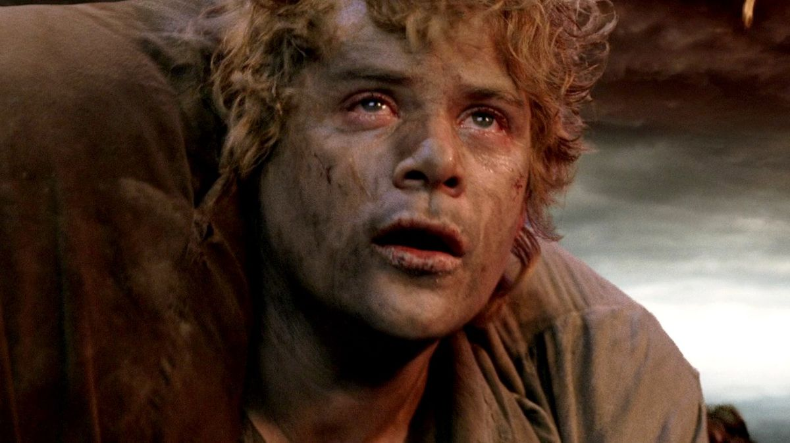

History
Samwise Gamgee, known as Sam, was a Hobbit of the Shire.
He was a gardener and Frodo Baggins's best friend. He accompanied Frodo to Mount Doom and played an integral part in destroying the One Ring.
After returning to the Shire, he married Rosie Cotton and had two little hobbits named Elanor and Frodo.